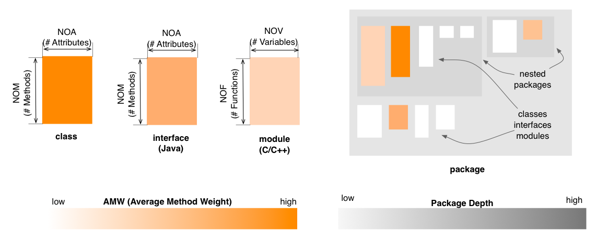

Package Map - Complexity Perspective
The Complexity Perspective of the Package Map
colors the classes, interfaces (Java) and modules (C and C++) based on their AMW (Average Method Weight) or respectively AFW (Average Function Weight) metric values.
This coloring uses a white to orange gradient, with darker shades of
orange for higher AMW values.

Entity selection
The user may select a class, an interface or a module in the map, in
which case the selected entity is colored in green (with no borders). Everything else
remains the same.
Other quality perspectives
Coupling,
Design Flaws, Encapsulation
Metrics used
AFW, AMW, NOA, NOF, NOM,
NOV